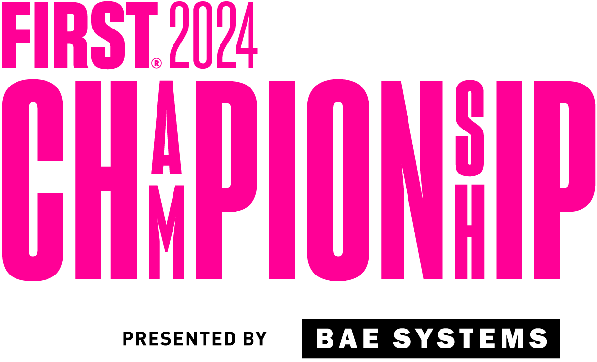

class: left, middle <div style="position: fixed; top: 180px; left:64px"><img src="robotpy.png" width="396px" height="132px" /></div> <h1 style="font-size: 2em"> past, present, and future </h1> <div class="slide-footer"></div> --- layout: true <img style="float: right" src="robotpy.png" width="198px" height="66px" /> <div class="slide-footer"></div> --- # Topics * The past * The present * The future * Q & A --- # Past * 2010: Peter Johnson created RobotPy * 2011: Dustin Spicuzza joined forces * 2014: Robot simulation introduced in PyFRC * 2015: Pure python WPILib * 2016: RobotPy introduced readthedocs API/docs site * 2018: Initial version of SysID created using RobotPy * 2020: Semi-automated C++ wrappers via robotpy-build * 2023: Team 4096 used RobotPy on FRC Championship winning alliance --- # Present * 2024: RobotPy officially supported by FIRST --- # Present * New features this year: * Build process reliability improvements * Deploy process is way smoother * Commands implementation is now pure python --- # Future * Python in FRC is here to stay * Mentioned in 2027 controller RFP * Expect 2027 controller and newer python versions to eliminate performance concerns --- # Future * The future of RobotPy depends on YOU * I have some ideas, but not much time anymore --- # Ideas for the future * Remote debugging * Performance: profiling and improvements * Cross-vendor swerve drive library for RobotPy * Asynchronous programming framework would be fantastic * Jupyter on the RIO would be really neat --- # Q & A * If you have questions we're happy to take them now * ... if you don't I have topics prepared --- layout: false class: center, middle # Thanks!